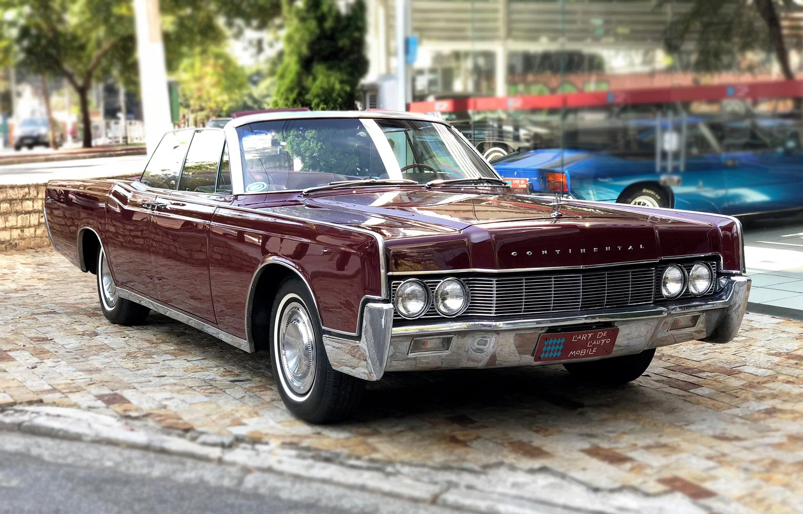

A história do Silver Shadow começa em 1965, quando a Rolls-Royce trocou o velho chassi com carrocerias de fornecedores por uma carroceria monobloco — um choque para puristas, mas necessário para competir. O desenho de John Blatchley era limpo, sem os exageros dos anos 50, e trazia inovações como suspensão autonivelante e freios a disco. Com motor V8 6.2 L (depois 6.75 L) e câmbio automático GM, o Shadow entregava “esforço adequado” sem alarde. Foi um sucesso: mais de 30 mil produzidos em 15 anos, atraindo novos clientes que queriam um Rolls pronto de fábrica. As atualizações de 1977 (Shadow II) refinaram direção e detalhes, mas a essência — conforto absoluto com tecnologia discreta — permaneceu até dar lugar ao Silver Spirit em 1980. usado por JFK, liderança de vendas. Depois vieram gerações FWD (1988-2002) e revival 2017-2020. Mais de 55 anos em 10 gerações, símbolo de luxo americano.

Não somente um carro, uma máquina.